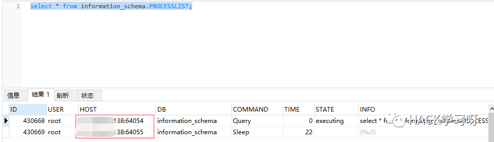
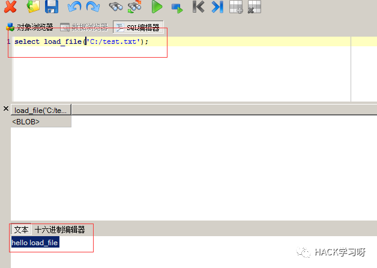

关于站库分离渗透思路总结
0x00 前言
看到了某篇关于站库分离类型站点相关的讨论，想总结下信息收集的技巧。
0x01 正文
关于站库分离类型站点网上暂时没有找到总结性的文章，所以想尝试记录下关于站库分离类型站点的渗透思路。
对站库分离类型站点通常可以有两个渗透入口点。
Web 网站
数据库
渗透思路其实也是比较常规。但是这里如果两个入口点无非两种路径。
从 web 网站打入进而打站库分离的数据库，内网渗透
从数据库打入进而打站库分离的 web 网站，内网渗透
根据不同的路径定制不同的渗透测试方案，下面记录一下流程和容易遇到的问题。
一、从 Web 入口渗透
从 Web 入口通常就是通过网站的各种漏洞来 getshell，比如文件上传、命令执行、代码执行、还有 SQL 注入写入一句话（into outfile、日志备份等）。
在获得 Web 权限或者有诸如文件读取等漏洞时，我们还读数据库配置文件、对数据库内容分析、查找数据库备份，进而对数据库目标 ip 进行渗透，以便后续操作。
二、从数据库入口渗透
但是这里要说主要是外网暴露的数据库入口点弱口令；Web 网站 SQL 注入。
从数据库入口渗透，同样主要是为了获取更大的权限，或者扩展我们的渗透成果，比如从数据库里可以得到一些密码信息，用户名等，在后续的内网渗透中可以很有效的帮助我们。
站点是站库分离的，数据库和 Web 不在同一台服务器上，这时候不能写入一句话木马通过 Web 去连，因为路径没有用。如果是从 Web 端找到的 SQL 注入，那么可以通过以下这些方式去做信息收集、获取权限。
MYSQL
（1）定位 Web 端 ip 地址
通过查询 information_schema 库中的 PROCESSLIST 可以查看当前 MYSQL 的连接情况。因为 web 应用会产生查询数据库操作，所以在回显出来的 host 字段中会带回目标的 ip:port。
select * from information_schema.PROCESSLIST;

在得到了 web 端的 ip 我们可以进而对 web 端进行渗透。
（2）load_file () 获取数据库所在服务器的敏感信息
如果没有 secure_file_priv 参数的限制（MySQL5.7 以下）我们还可以用 load_file() 函数对文件内容进行读取。
select load_file('C:/test.txt');
# 左斜杠 /

还可以获取网卡信息，比如读：
/etc/udev/rules.d/70-persistent-net.rules
获取网卡名称。
/etc/sysconfig/network-scripts/ifcfg-网卡
静态IP
DHCP的话
/var/lib/dhclient/dhclient--网卡.lease
MSSQL
（1） 判断是否站库分离
得到客户端主机名
select host_name();
得到服务端主机名
select @@servername;
根据结果判断是否分离，结果一样就可能站库同服务器，结果不一样就是站库分离。
（2）存储过程执行命令
我们可以通过 MSSQL 的存储过程执行系统命令，可以尝试直接提升权限后渗透其他主机，
常用到的两个：
XP_CMDSHELL
SP_OACREATE
可以探测数据库服务器是否出网，通过执行 ping 或者 curl 看是否出网，通常遇到 MSSQL 我们直接就通过命令执行上线了。
同样是数据库，自然其中有一些敏感信息，为了进一步渗透，可以整理密码本或者其他信息。
未完待续。

作者：Keefe
参考来源：www.aiyuanzhen.com